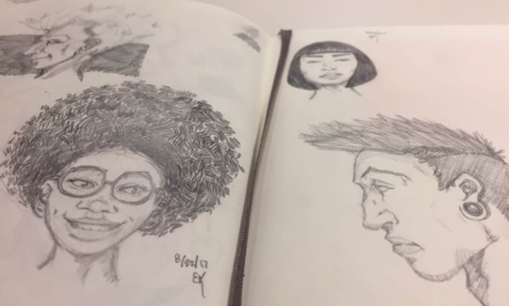
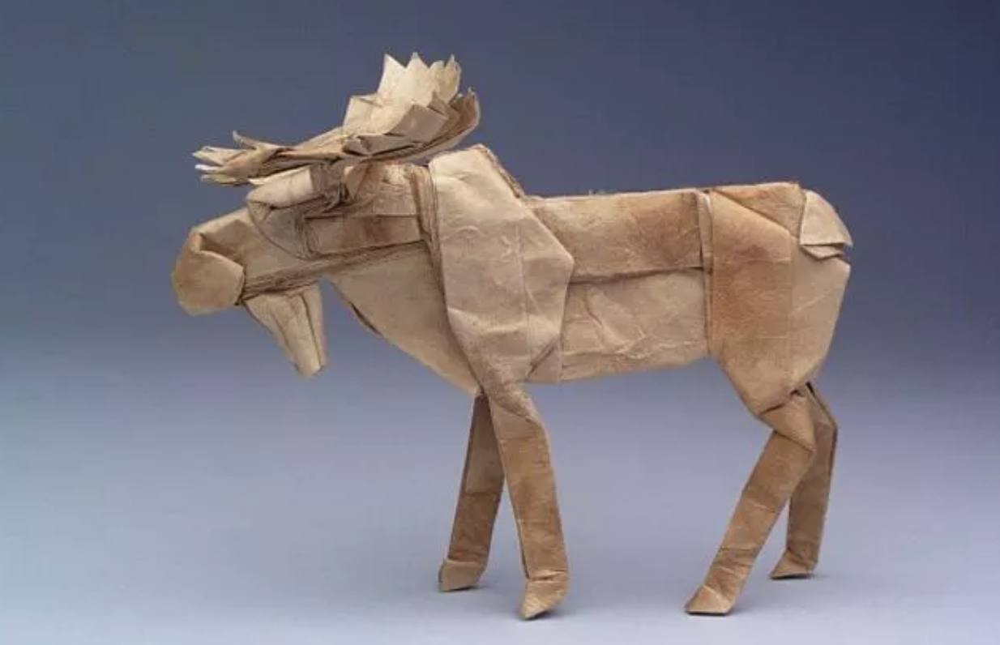

The longest Hobby I have had, Drawing -
I have been drawing since I was able to hold a crayon. I have a neighbor growing up that was a cartoonist that always inspired me to improve and practice. My favorite thing to draw these days are peoples faces. There is something about capturing an emotion of someones face that find fascinating. Drawing will always be my escape and getaway.
Origami is fascinating to me
I started origami after a received a how too book as a present. The first thing I made was an origami crane. I have since purchased several books and become much more adept. The last figure I had made was a butterfly with 102 folds. Most people do not realize that math is a huge part of the origami design process. Combining both math and Art, two of my favorite subjects, I was bound to enjoy this activity.
Coding is a hobby I want to turn into my career
I started coding in a java class in high-school and ever since spending weeks trying to build "the game of life" programming assignment I have always had a soft spot for developing with code. There is something very special about the satisfaction of gettin a program to finally work. There is also something magical about how much you can do by wielding nothing but a computer and knowledge.